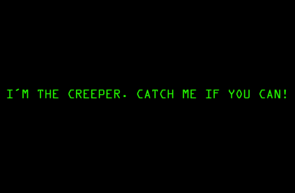
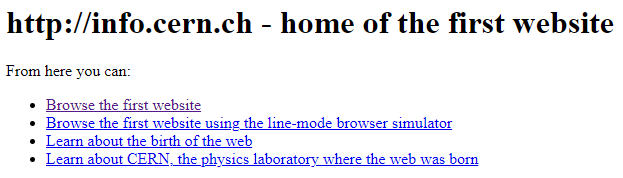
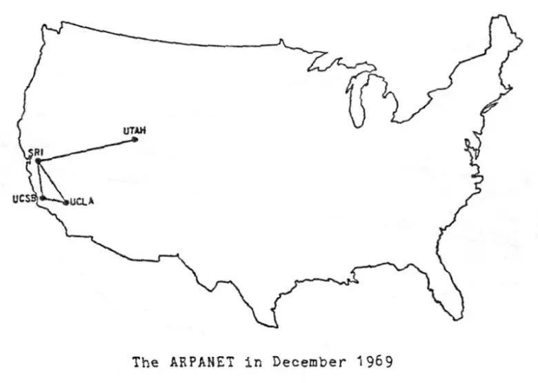

1971 - El primer virus de la historia
El primer virus informático podría definirse de distintas formas según por como se vea, si hablamos del primer
virus que infectaba los ordenadores, podríamos considerar que es Creeper, pero si hablamos del primer virus tal,
uno que fuera replicable hacia otros ordenadores, sería Rabbit, pero entraremos en contexto a continuación.
Creeper
El primer virus informático de la historia fue desarrollado por Bob Thomas, un programador de BBN Technologies
(una empresa tecnológica que proveía servicios de desarrollo e investigación) en 1971, con la intención de crear
un programa para confirmar, en la práctica, si este se podía moverse entre ordenadores.
Creeper era un virus totalmente inofensivo que tras “infectar a un archivo”, este mostraba el famoso mensaje
de I'M THE CREEPER. CATCH ME IF YOU CAN!“” y comenzaba a imprimir un archivo y antes de finalizarla, saltaba
al siguiente ordenador a través de la red ARPANET sin dejar rastro del anterior, de forma automática.
En contraparte, se creó Reaper, cuyo desarrollador es desconocido, y que fue bastante efectivo en su propósito
de detectar el ataque de Creeper y lo eliminaba del sistema para evitar su propagación a otros equipos.
Como algunos pondrían en duda el carácter vírico de Creeper debido a que no se multiplicaba entre los ordenadores,
también es imprescindible de hablar del verdadero primer virus replicable y malicioso: Rabbit.

Rabbit
Rabbit (o Wabbit) llegó en 1972, un virus que se diferenciaba de Creeper debido a su naturaleza
autoreplicante, lo que hacía considerarse para algunos el verdadero primer virus que se creó.
Su función consistía en que, al infectar un ordenador, este programa se copiaba constantemente a una
gran velocidad hasta el punto de que se ralentizaba el ordenador y posteriormente colapsar un sistema
informático dejando de funcionar.
Webgrafía
Fuente 1
Fuente 2
Fuente 3
Fuente 4
Más hitos
1993 - El primer motor de búsqueda
En junio de 1993 apareció el primer motor de búsqueda creado por Matthew Gray y le puso
el nombre de Wanderer, que utilizaba un software que rastreaba automáticamente toda la red e iba clasificando
la información que encontraba (conocido como robot de búsqueda). Como respuesta, Martin Koster sacó Aliweben
en octubre de 1993 , un buscador que se basaba en la información que daban los administradores de los servicios
web.
El problema de los buscadores de aquella fecha es que ninguno tenía la inteligencia para analizar la
información que estaba referenciando, a si que en enero de 1994 surgió Galaxy, que se convirtió en el primer
buscador en utilizar directorios temáticos con un árbol de categorías jerarquizadas.
Webgrafía
Fuente
1990 - La creación de la www (Wide World Web)
La World Wide Web (la Web) nació en el CERN (Centro Europeo de Física Nuclear) por Tim Berners-Lee
como un sistema de intercambio de datos entre los científicos que trabajaban en la institución, creando los hiperenlaces,
el lenguaje HTML y el protocolo HTTP, y que hasta 1990 se crearía la WWW, un navegador y servidor web, en la que se crearía el
primer sitio web, que actualmente se puede visualizar aquí, componiendose de puro texto
pues a penas se había creado el lenguaje HTML.

Webgrafía
Fuente
2000 - El estallido de la burbuja de las puntocom
La burbuja se origina desde 1997 en donde accionistas que hacían inversiones arriesgadas empezaron a apostar por las
empresas emergentes, cuyos negocios se basaban en la información y cuyos proyectos salían a bolsa mediante el capital riesgo con el fin de conseguir financiación
La burbuja llegó a un punto en el que las acciones basadas en estas empresas
acabaron subiendo hasta un 400% con respecto a años anteriores, hasta que llegó un dia del año 2000 en el que las acciones
bajaron de repente hasta un 70-80%, lo que provocó el quiebre de muchas empresas tecnológicas y la fusión de otras por la necesidad de sobrevivir
a la crisis financiera, generando pérdidas de cerca de 5 billones de dólares
Webgrafía
Fuente 1
Fuente 2
1969 - La primera red informática
La primer red informática se desarrolla en 1958, cuando EEUU fundó la Advanced Researchs Projects Agency (ARPA) con la intención
de establecer comunicaciones directas entre los ordenadores y facilitar la comunicación entre las diferentes bases de
investigación militares, a si que bajo el mando de John Licklider del MIT, se creó un programa de investigación computacional
y que para 1967 ya tenía un plan para la creación de ordenadores, surgiendo así, en 1969 la primera red de ordenadores: ARPANET
Esta se fue desarrollando al punto de que en 1971 tenía 23 puntos conectados mediante el protocolo NCP (Network Control Protocol).

Webgrafía
Fuente
1993 - Primer navegador web
El primer navegador de Internet ampliamente usado fue NSCA Mosaic. Más tarde, el grupo de Mosaic pudo sacar su
primer navegador de Internet comercial, llamado Netscape Navigator.
Este navegador fue el mas utilizado entre la gente, hasta que llegó Microsoft Internet Explorer llegó
1999, superando a Netscape por ser el navegador instalado por defecto en los ordenadores con Windows de forma
gratuita.
Netscape en 2002, sacó una versión de código libre llamado Mozilla, que perdura actualmente.

Webgrafía
Fuente 1
fuente 2Fuente 2
1973 - La aparición del protocolo TCP/IP
El protocolo TCP/IP (Transmission Control Protocol/Internet Protocol) tiene origen en 1973, por el desarrollo de un
protocolo de comunicación para ARPANET. Cerf y Kahn diseñaron el Protocolo de Internet (IP) y el Protocolo
de Transmisión (TCP), que más tarde se unirían para formar el conjunto de protocolos TCP/IP, con la
finalidad de contar con un lenguaje común a todas las computadoras conectadas a Internet, y em 1977 se hizo una primera prueba de conexión entre
de las redes ARPANET, CSNET y MILNET.
Webgrafía
Fuente
1999 - Aparición de los móviles con Internet
En 1999 la operadora japonesa DoCoMo lanzó el i-Mode, un conjunto de protocolos que permitían ver en la
pantalla del móvil el contenido de páginas web adaptadas. En Europa esta tecnología se denominó WAP
(Wireless Application Protocol) y fue promovida desde el WAP Fórum (Open Mobile Alliance).
A partir de ahí empezaron a aparecer teléfonos móviles que soportaban el acceso a páginas web que tuvieran versión
para teléfonos. Con el tiempo el protocolo se quedó en desuso debido a que los moviles empezaron a interpretar
cada vez mejor lenguajes más complejos.
Webgrafía
Fuente 1
Fuente 2
1991 - Comercialización de Internet
La Fundación Nacional de la Ciencia prohibió en su momento los proveedores de servicios de Internet comerciales, por lo que
que sólo las agencias gubernamentales y las universidades podían utilizar Internet, hasta que finalmente cambió en
1985.
El primer proveedor de servicios de Internet comercial se llamó “The World”. Era un servicio de acceso
telefónico lento, pero generó una amplia base de consumidores en tan sólo los dos primeros años, y en 1991
la NSF levantó la prohibición de los proveedores de servicios de Internet comerciales cuando vio que The World
había abierto las compuertas.
Webgrafía
Fuente
1970 - Primeras transacciones a través de internet
En la década de 1960 se creó el EDI (Electronic Data Interchange), una plataforma que le facilitaba a las
empresas transmitir datos financieros de manera electrónica, como órdenes de compra y facturas, lo que facilitó
la venta por catálogo y telefónica, y a finales de los años 70, el el inglés Michael Aldrich logró hacer las
primeras transacciones electrónicas informáticas de ventas mediante una linea multiusuario de procesamiento
computarizado.
Una vez creada la WWW, junto al levantamiendo de la prohibición de uso comercial de internet de 1991, empezaros
a formarse las primeras páginas de comercio electrónico que algunas se mantienen en la actualidad.
Webgrafía
Fuente
1971 - Primer correo electrónico
El primer correo electrónico fue enviado en el 21 de junio de 1971 por parte ingeniero de computación Raymond
Tomlison con el texto “ QWERTYIOP”, seguido del signo de arroba (@) como divisor entre el usuario y el computador
del destinatario, entre dos ordenadores que estaban en la misma sala, viajando por la red ARPANET.
El fin del correo era en base a un experimento del MIT con la intención de desarrollar el primer sistema de
correo electrónico. Inicialmente se usaba a nivel universitario, pero con el tiempo también se posibilitó
el almacenamiento de información para gestionarla rapida y sencillamente y se acabó extendiendo a lo que
es hoy en día.
Webgrafía
Fuente 1
Fuente 2
1978 - El primer videojuego por red
MUD (Multi-User Dungeon) o MUD1, creado por Roy Trubshaw y Richard Bartle en la Universidad de
Essex y con inspiración de otro juego de mazmorras llamado Zork, es considerado como el primer
videojuego multijugador que funcionaba a través de la red. Este era un videojuego de rol de
mazmorras en linea en el que participaban varios usuarios que se conectaban y este se ejecutaba
en el servidor. Este fue el videojuego que fue dando origen al género con el mismo nombre del
videojuego, que, aunque ya sea un género poco conocido actualmente, ha derivado a otros como
los MMORPG. Por aquí teneis el enlace del juego por si quereis probarlo
Webgrafía
Fuente 1
Fuente 2
1978 - Las primeras publicidades
Aunque el primer caso de publicidad online se remonta al 1978, cuando se envió el primer correo
electrónico con un anuncio, no fue hasta la década de los 90 cuando empezaron a aparecer los primeros
banners, ya que fue la época en la que Internet empezó a coger fuerza en el medio, a los que les siguió
la publicidad en búsquedas sobre los 2000. Surgiendo como tal la publicidad en Internet.
Webgrafía
Fuente